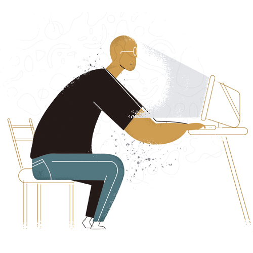
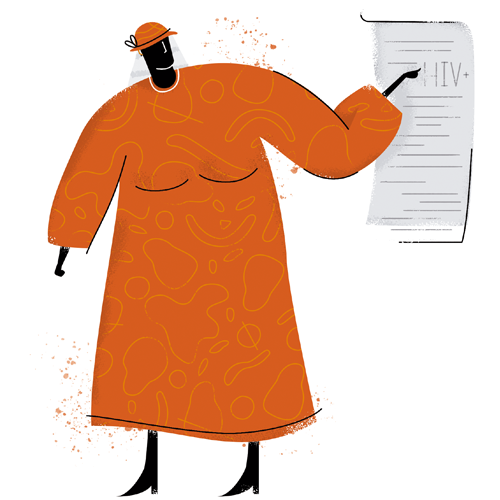
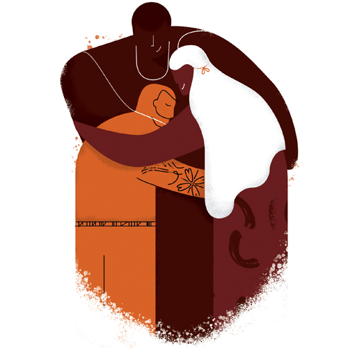

As vozes d'O Laço que Abraça
Por trás de cada dado e estatística sobre o HIV, existem vidas cheias de recomeços, dores, superações e, acima de tudo, humanidade. Nesta página, abrimos espaço para que você conheça de perto a jornada de quatro pessoas que transformaram o diagnóstico em um ponto de partida para novas formas de viver e se relacionar.
Abaixo, você encontrará uma prévia de cada perfil presente no livro O Laço que Abraça (Morgana, Jota, Glória e João). Cada relato acompanha a seção "Entenda", trazendo um olhar ciêntifico, de forma simplificada, sobre as realidades vividas por eles.
Cap. 1 — Escolhas
Para Morgana a vida é feito de escolhas. 8 ou 80, sempre muito intesamente. Uma pessoa marcante que conseguiu se reiventar e transformar sua própria vida após um diagnóstico complicado.
Leia uma prévia
O ano era 1994. Já era madrugada quando um cliente an tigo, sumido há meses, apareceu na pensão procurando por Morgana. “Alto, moreno e magro”, foi assim que Iolanda des creveu o homem que acabara de chegar. Era um velho conhe cido que Morgana encontrava pelas ruas, mas aquele homem nunca havia procurado por ela na pensão. Ele não parecia bem. Mas ela não questionou a mudança de aparência dele, apenas deduziu que fosse consequência do uso de drogas e o convi dou a subir para o quarto.
Os dois fumavam um cigarro, deitados na cama com lençóis coloridos, conversando como amigos. Mesmo sem o conhecer direito, Morgana confiava bastante naquele homem. Confiava.
Dias antes, uma das garotas da pensão havia morrido em consequência da Aids. Curioso com a situação, o cliente fez várias perguntas a Morgana. Durante o vai e vem do assunto, ela sentiu necessidade de questionar sobre a aparência do cliente. A pele manchada não parecia sinônimo de saúde. A resposta foi direta e num tom sereno, como se o que ele dissesse fosse algo que Morgana já devesse saber: “a mesma coisa que a sua colega”. Morgana se assustou. Seu cliente havia acabado de assumir ter o vírus e eles não haviam usado preservativo. “Ele ainda teve coragem de falar que não estaria visitando uma travesti se não tivesse na merda. Quase o matei nesse dia”.
Entenda
Ao ler a história de Morgana algumas expressões e temas podem não ter ficado claros ou suficientemente explicados. Exposta desde muito cedo à realidade das trabalhadoras se xuais, Morgana foi “carimbada” por um cliente. O ato que ganhou nome específico acontece quando alguém decide expor, com intenção de contaminar, outra pessoa ao HIV. Na época envolta de obscuridade como era a temática da Aids, Morgana não procurou a justiça. Mas você deve estar se perguntando: e hoje? No cenário atual, a legislação brasileira, assim como indicado pela ONU, Organização das Nações Unidas, não apresenta uma tipificação específica para esses casos. No entanto, é possível perceber uma tendência da justiça brasileira em enquadrar o ato de carimbar como o crime de lesão corporal gravíssima, com reclusão de dois a oito anos.
Cap. 2 — Aprendizado
Aprender com sua própria história. E rever seus próprio preconceitos. Esse foi um dos pontos pertinentes na vida positiva de Jota, mais um que compartilhou um pouco sobre sua vida para O Laço que Abraça.
Leia uma prévia
(...)
Ao se aproximar, o médico foi sucinto: “Os resultados dos exames comprovaram que o senhor é soropositivo e já desenvolveu a Aids”. Jota sentiu o coração palpitar forte e não conseguia pensar em nenhuma palavra. Estava em choque. A traição, em 1998, foi a primeira memória que veio em sua mente.
Cristina voltava do banheiro pelo longo corredor e, enquanto ela se aproximava, Jota tentava se recompor. Ao vê-la se aproximar, o médico perguntou: “O senhor gostaria que eu contasse a ela?”. Jota foi rápido na resposta: “Eu mesmo conto”.
Ainda na Medicina, Jota não quis esperar. Contou no mesmo minuto para sua esposa que era soropositivo. Assim como ele, Cristina não estava preparada para aquela notícia. Ela se deu conta que aquele diagnóstico era resultado de uma traição, e a preocupação que tinha com o marido desapareceu. O caminho de volta para casa foi em silêncio.
Jota começou o tratamento imediatamente. No início, os efeitos colaterais do coquetel eram fortes. E, em casa, ele não tinha muita ajuda.
A comunicação era nula. Ele tinha dificuldade de se ali mentar e isso só piorava o quadro imunológico. O preconcei to da esposa o machucava. “Se eu encostasse nela, para pedir ajuda ou algo assim, ela saia correndo e ia limpar com álcool”. A raiva e a angústia passaram a morar com Jota, Cristina e a filha caçula.

Entenda
Jota, assim como muitos homens heterossexuais, sempre se distanciou da questão da Aids, só fazendo o exame por indicação médica quando já apresentava as marcas da síndrome em seu corpo. Principalmente como já vimos no capítulo anterior, por causa das determinações obsoletas de “grupos de risco” que transformavam a Aids em uma realidade distante do homem heterossexual. (...) O diagnóstico de Aids significa que, naquele momento, o organismo de Jota ou apresentava uma contagem de células LT-CD4+ muito baixa (menor de 350 células por mm³) ou um quadro clínico de infecções graves. Essas doenças são várias, entre as mais comuns estão as infecções recorrentes ocasionadas por fungos; diarreia crônica, com perda de peso; pneumonia; e tuberculose.
Cap. 3 — Compreensão
Mulher, mãe e batalhadora. Glória mostra como foi sua história com o HIV e como a negação do seu diagnóstico impactou sua vida.

Leia uma prévia
Percebendo uma melhora, Glória negava que era soropositiva, para ela havia um erro, os exames e o médico estavam errados. Esse foi o seu comportamento por vários anos, a negação do diagnóstico e as interrupções no tratamento contribuíram para a evolução do quadro de Aids e o desenvolvimento de infecções oportunistas.
A recusa em tomar os medicamentos ocorreu várias vezes, ela os deixava no canto e ignorava a importância de usá--los. Isso trouxe consequências e Glória passou por sete internações. “A última foi em 2005, que dei AVC”. Durante certo tempo, teve que andar de cadeiras de rodas, logo depois de bengala. Mais tarde, no mesmo ano, a aceitação veio totalmente, sem recaídas.
Mesmo a aceitação foi marcada pela ideia de que morreria logo. Seus diálogos com a psicóloga do ambulatório sempre se repetiam. Perguntava: “Vou ter oito dias, oito meses, oito anos?”. Afirmava que estava pronta para receber uma data de sua morte. A psicóloga a venceu pela repetição. “Dona Glória, a senhora não vai morrer de Aids” e reforçava a ideia de que qualquer um estava sujeito à morte em todos os momentos da vida. Por fim, entendeu.
Entenda
A principal causa do diagnóstico da Aids de Glória foram as interrupções e a realização do tratamento de forma incorreta. Algumas pesquisas indicam que seguir orientações médicas e fazer o tratamento de forma correta não é a realidade para todos soropositivos. Em Belo Horizonte, pesquisadores da Universidade Federal de Minas Gerais (UFMG) checaram que 23% dos diagnosticados não aderiram ao tratamento, e 32% declararam não seguir corretamente as prescrições de seus médicos. Informações que podem ser comprovados nos dados das farmácias e ambulatórios, nos quais os registros apontaram que 47% dos soropositivos não voltaram a pegar a medicação com a regularidade necessária, e 28% abandonaram o coquetel logo no primeiro ano de uso. Os dados são preocupantes, já que a adesão incorreta ao tratamento ajuda o HIV a desenvolver resistência aos medicamentos.
Cap. 4 — Família
João Taurino com ascendente em leão. Seguro de si, só queria uma coisa: que todos entendesse de fato a vida positiva.
Leia uma prévia
Lá fora o sol já apontava com toda a força das 11 horas da manhã. As ruas movimentadas. Ir e vir de carros, pessoas e sentimentos. A força, que até então João insistia em segurar, se desfez no fluxo de suas certezas e inseguranças. A armadura que ele mesmo persistiu em vestir, a confiança, firmeza e segurança, não se sustentaram durante muito tempo. Foram poucos passos, já a alguns metros da unidade de saúde. No segundo quarteirão, João desabou. Chorou, chorou, chorou. Chorou andando na rua. As pessoas que passavam e o viam naquele estado deviam não entender, mas ele continuou andando até chegar em casa.
Morava com a família. Horário de almoço, estavam seu pai, seu irmão e sua cunhada na sala. Já entrou chorando, não conseguiu segurar. João, com o papel do exame na mão, desa bafou. “Esse aqui é um exame de sangue que deu positivo pro teste de HIV. Eu sou soropositivo”. Seu irmão já foi ao chão, desesperou, começou a chorar e o abraçou. Seu pai, também muito mexido com tudo, já o aconchegou em gesto de apoio. “Foi o momento de amparo que eu tive. As primeiras pessoas a saberem foram eles. Eu precisava compartilhar isso. A família é onde eu tenho a recorrer, onde eu sempre tive e onde eu sem pre vou ter”, relembra.

Entenda
Com a história particular de João podemos ilustrar a realidade brasileira em geral. Com 14 anos, no início de sua vida sexual, ele se expôs ao vírus, muito associado à falta de hábito do povo brasileiro no uso do preservativo. A mais recente Pesquisa de Conhecimentos de Atitudes e Práticas da População Brasileira, realizada pelo Ministério da Saúde em 2013 e divulgada em 2016, aponta que apenas 64,2% da população sexualmente ativa entre 15 e 24 anos, utilizaram o preservativo na primeira relação sexual. A taxa de uso de preservativo cai ainda mais quando consideramos todas as relações sexuais, para 23,5% com qualquer parceria.